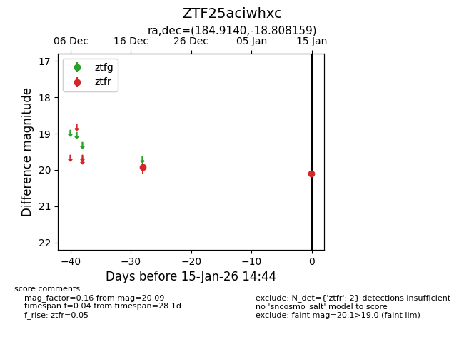
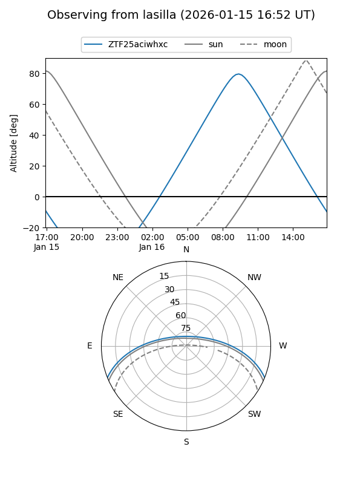
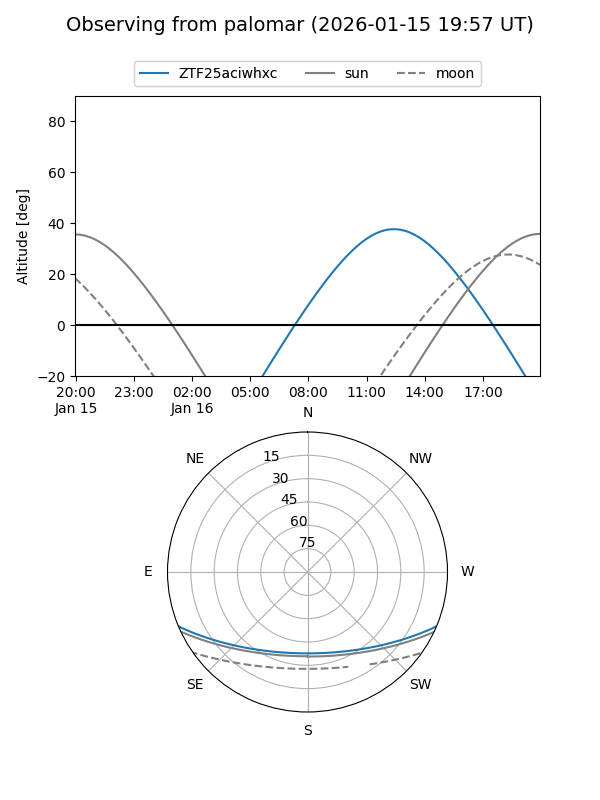

ZTF25aciwhxc
Target ZTF25aciwhxc at 2026-01-15 14:45
Aliases and brokers:
FINK: link
Lasair: link
ALeRCE: link
alt names
ZTF25aciwhxc (ztf,fink_ztf)
Coordinates:
equatorial (ra, dec) = 184.9140,-18.80816
equatorial (HMS+DMS) = 12:19:39.35,-18:48:29.37
galactic (l, b) = (292.5530,+43.42217)
Flags:
Photometry:
last ztfr=20.09
2 ztfr detections
Lightcurve

Visibility


Additional plots